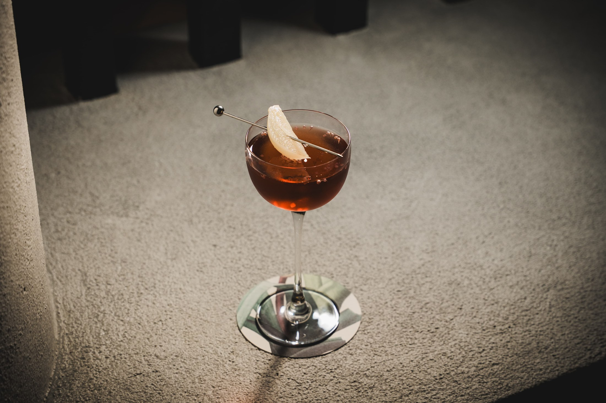

Ten years ago, telling a Melbourne bartender you stocked an Australian single malt earned you a raised eyebrow. Today it earns you a place on the back bar. The shift didn't happen by accident — it's the result of a generation of distillers who decided the rules written in Speyside didn't have to be the rules written here.
What makes Australian single malt distinct isn't one thing; it's a set of deliberate departures. The climate is the loudest of them. Where a Scottish cask might sleep quietly through a decade of cool, even weather, an Australian barrel lives through summers that push maturation hard and fast. The spirit breathes in and out of the wood with the seasons, pulling colour and character from the oak in a fraction of the time.
Terroir in a glass
The best local producers have stopped apologising for that speed and started designing around it. Smaller barrels, unusual cask finishes, open fermentation that invites wild yeast into the wash — these are choices, not compromises. A distillery on the fringe of a national park makes a different whisky to one in a city warehouse, and increasingly, drinkers can taste the difference.
The best spirits don't find bartenders. Great representation does.
That's where the work really begins. A brilliant liquid on a distillery shelf is a private pleasure; a brilliant liquid in front of the right bartender, with the story to match, is a brand. Getting from one to the other is a matter of relationships, education, and knowing which room to walk into — the part that never shows up on the label.
What comes next
The category is still young enough that its best expressions haven't been made yet. Casks laid down this year won't be poured until the distillers behind them have refined a decade of instinct into something repeatable. For the venues paying attention now, that's the opportunity: to build a relationship with these brands before the rest of the market catches up.